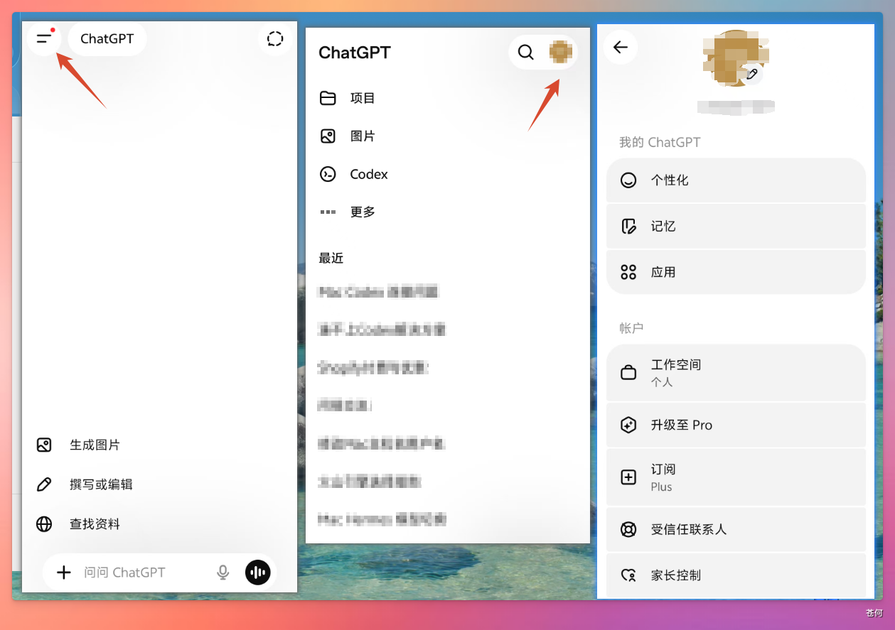
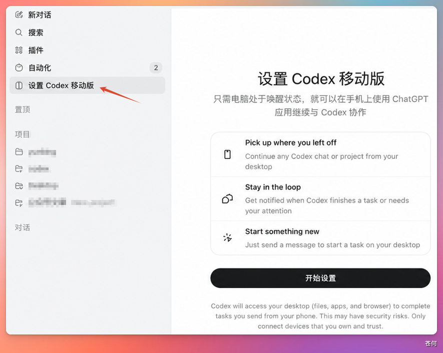
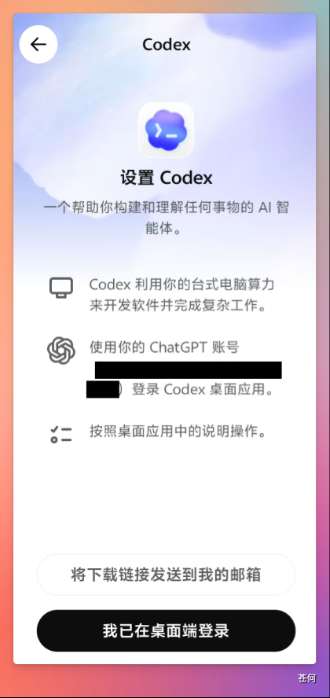
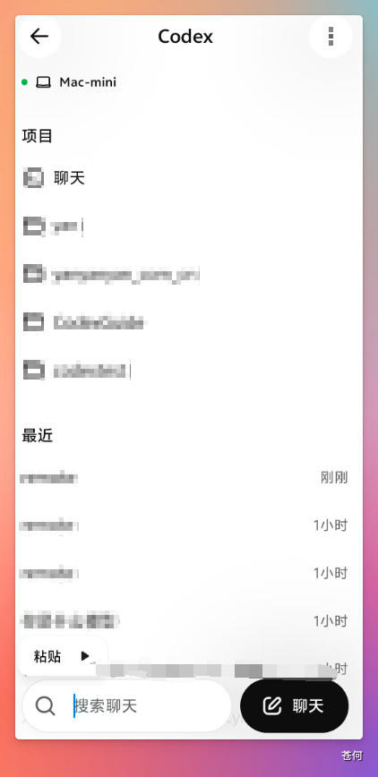

Codex 支持连接手机端 ChatGPT App，连接后可以在手机上查看和管理 Codex 任务。
本篇介绍如何将安卓手机与 Codex 配对连接。
1. 准备工作#
在开始连接之前，请确保满足以下条件：
| 条件 | 说明 |
|---|---|
| Codex App 为最新版 | 检查电脑端是否有更新提示 |
| 电脑端已安装并登录 Codex | 确保能正常使用 |
| 手机上已安装 ChatGPT App | 从应用商店下载 |
| 电脑和手机登录同一个 ChatGPT 账号 | 这点非常重要 |
| 电脑和手机在同一网络下 | 比如连接同一个 WiFi |
| 电脑保持联网和唤醒状态 | 不要让电脑进入睡眠 |
如果不确定是否满足条件，先逐一检查，避免连接时出问题。
2. 开启多因素身份验证#
连接 Codex 之前，需要先在手机上开启多因素验证。
打开 ChatGPT App，点击左上角头像 → 向下滑动找到「安全」→ 点击「验证器应用」。


将显示的验证码复制到验证器应用（推荐 Google Authenticator 或 Microsoft Authenticator），然后输入返回的 6 位动态验证码。

多因素验证可以保护账号安全，同时也是连接 Codex 移动端的必要条件。
3. 启动连接向导#
打开 Codex，点击左侧菜单中的「设置 Codex 移动版」→ 点击「开始设置」。

4. 扫码连接#
在弹出的窗口中选择「安卓」，使用手机自带的扫一扫功能扫描二维码。
扫码后手机会显示以下界面：

- 还没下载 ChatGPT App → 点击「下载」安装
- 已下载并登录 → 点击「我已在桌面端登录」
手机端会显示「等待桌面响应」：
此时可能遇到的问题：网络不稳定可能导致连接失败；Mac 电脑的防火墙可能拦截连接。
5. 授权设备#
连接建立后，点击「授权此设备」完成绑定。

6. 连接成功#
连接成功后，电脑端会显示「已连接」状态，同时看到以下选项：

| 选项 | 作用 | 建议 |
|---|---|---|
| 让此电脑保持唤醒状态 | 防止电脑睡眠，确保任务持续运行 | ✅ 建议开启 |
| 启用 Computer Use | 让 Codex 能够操作电脑上的应用程序 | ⚠️ 权限敏感，新手先别开 |
| 安装 Chrome 扩展程序 | 让 Codex 能在浏览器中自动填表、浏览网页 | ⚠️ 涉及账号安全，谨慎开启 |
🔐 安全提醒：Computer Use 让 Codex 可以控制你的电脑，不懂的情况下不要随意开启；Chrome 扩展涉及网页操作，在涉及账号、支付等敏感页面时要特别小心。
7. 验证连接状态#
手机端查看： 打开 ChatGPT App，可以看到电脑端的项目列表。

电脑端查看： 点击 Codex 左下角的手机图标 → 点击「管理连接」→ 查看已连接的安卓设备。

常见问题#
连接一直失败怎么办？#
检查以下几点：
- 确认电脑和手机在同一个 WiFi 网络下
- 检查电脑防火墙是否阻止了 Codex
- 确认 ChatGPT 账号已在两端登录
- 尝试重启 Codex App 和手机 App
- 在 Mac 端 Codex 内让 GPT 进行修复

连接后手机端看不到项目？#
- 确认电脑端 Codex 正在运行
- 检查电脑是否进入了睡眠状态
- 尝试刷新手机端页面